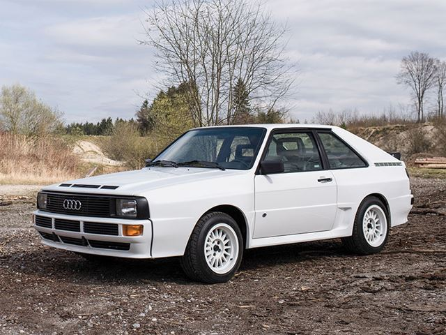
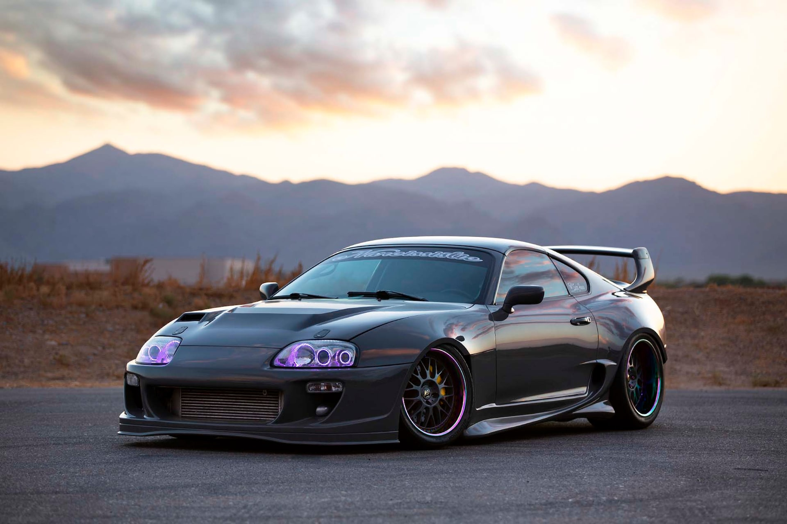
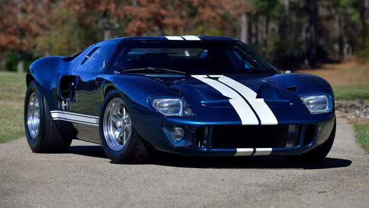
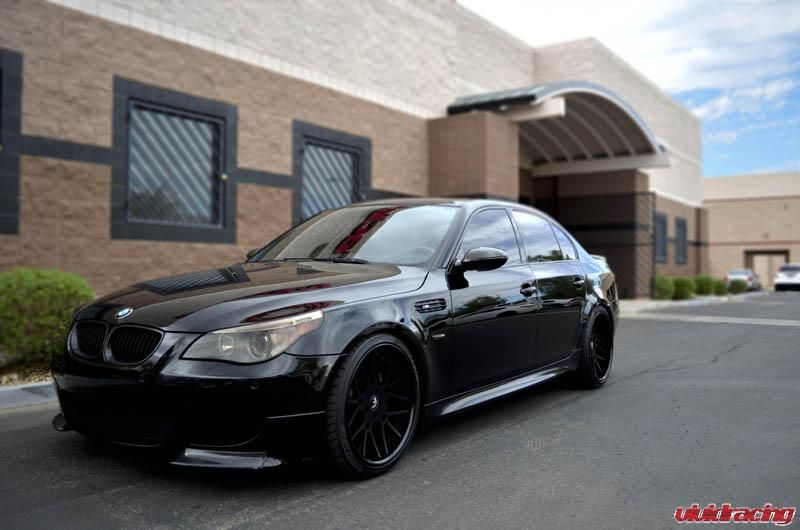
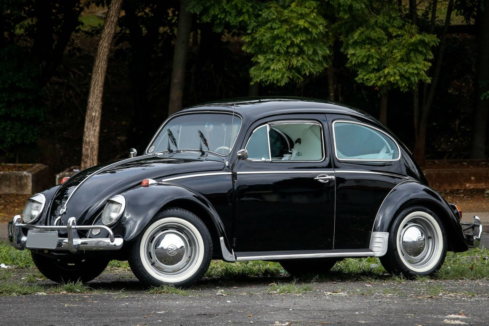
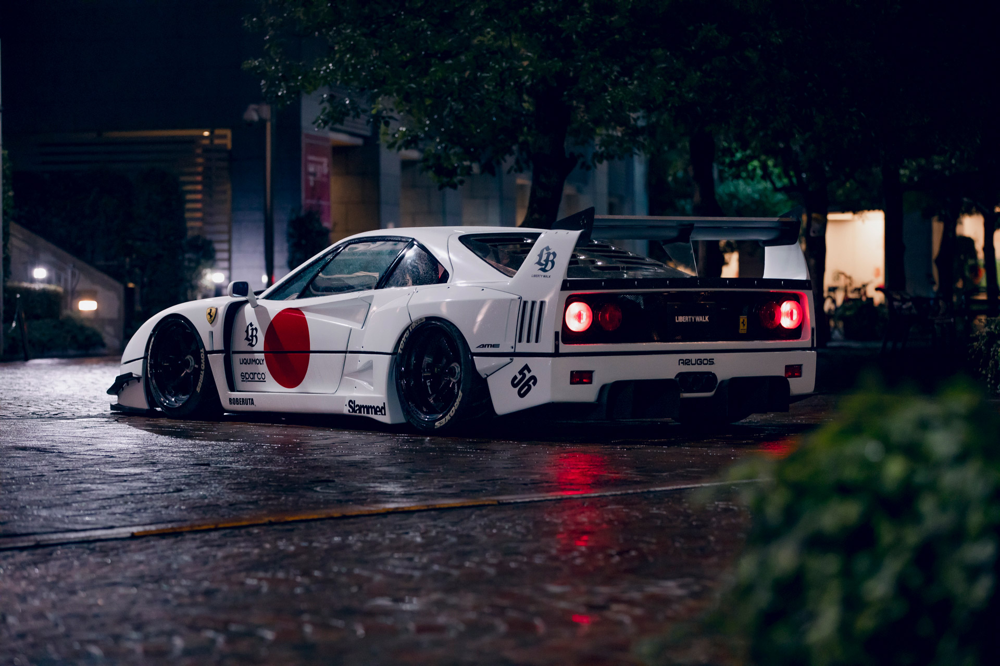
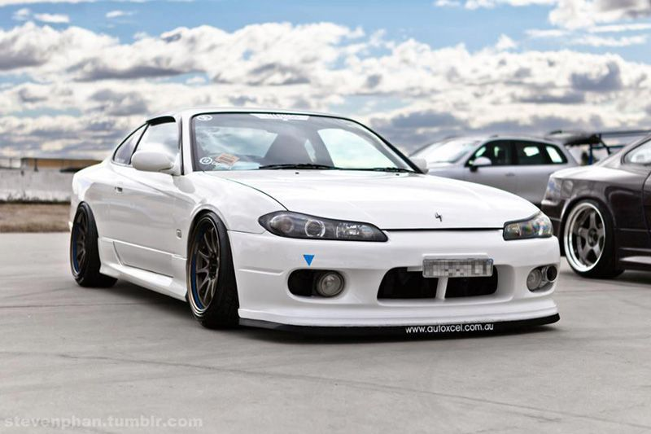

Não há nada como o som de um motor rugindo, a sensação de uma suspensão esportiva, o cheiro de pneus queimados e o visual de um carro esportivo na pista. Carros são muito mais do que simples meio de transporte. Eles são uma paixão que faz nosso coração acelerar, nossas mãos suarem e nossos olhos brilharem. Quem é um verdadeiro gearhead sabe que, quando se trata de carros, a emoção é o que importa.
Nessa parte iremos citar e caracterizar alguns carros que fizeram história no mundo do automobilismo
Informações do Audi Quattro
O Audi Quattro é um carro lendário que revolucionou o mundo dos ralis, com sua tração nas quatro rodas e potência de motor.
Clique aqui para ver a disponibilidade de compra de um Audi Quattro no Brasil!
Nissan Skyline GTR R34
Informações do Nissan Skyline GTR R34

O Nissan Skyline GTR R34 é conhecido por sua performance excepcional, especialmente em pista, e é um dos favoritos dos entusiastas do tuning.
Clique aqui para ver a disponibilidade de compra de um Nissan Skyline GTR R34 no Brasil!
Toyota Supra MK4
Informações do Toyota Supra MK4
O Toyota Supra MK4 é um carro esportivo icônico, que é amado por sua aparência marcante e desempenho excepcional, tanto nas ruas quanto nas pistas.
Clique aqui para ver a disponibilidade de compra de um Toyota Supra MK4 no Brasil!
Ford GT40
Informações do Ford GT40
O Ford GT40 é um carro de corrida lendário, construído para desafiar a Ferrari em Le Mans.
Clique aqui para ver a disponibilidade de compra de um Ford GT40 no Brasil!
BMW M5 V10
Informações do BMW M5 V10
O BMW M5 V10 é um carro esportivo de alto desempenho que combina conforto e luxo com velocidade e manuseio excepcionais.
Clique aqui para ver a disponibilidade de compra de uma BMW M5 V10 no Brasil!
Fusca
Informações do Fusca
O Fusca é um carro icônico que é conhecido por sua confiabilidade e facilidade de manutenção.
Clique aqui para ver a disponibilidade de compra de um Fusca no Brasil!
Ferrari F40
Informações da Ferrari F40
A Ferrari F40 é um supercarro lendário que é reverenciado por entusiastas de carros em todo o mundo por sua aparência icônica e desempenho incrível.
Clique aqui para ver a disponibilidade de compra de uma Ferrari F40 no Brasil!
Tesla Model S Plaid
Informações do Tesla Model S Plaid

Tesla Model S Plaid é um carro elétrico de alto desempenho que está definindo o padrão para o futuro dos carros elétricos.
Clique aqui para ver a disponibilidade de compra de um Tesla Model S Plaid no Brasil!
Nissan Silvia S15
Informações do Nissan Silvia S15
Nissan Silvia S15 é um carro esportivo compacto que é popular entre os entusiastas de drifting.
Clique aqui para ver a disponibilidade de compra de um Nissan Silvia S15 no Brasil!
Honda Civic Type R
Informações do Honda Civic Type R

O Honda Civic Type R é um carro esportivo compacto que oferece manuseio excepcional e desempenho impressionante.
Clique aqui para ver a disponibilidade de compra de um Honda Civic Type R no Brasil!